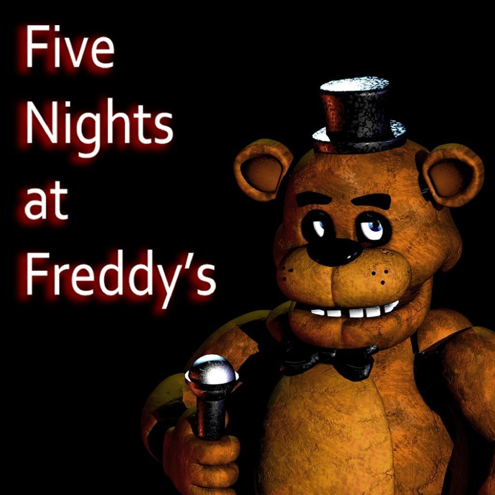
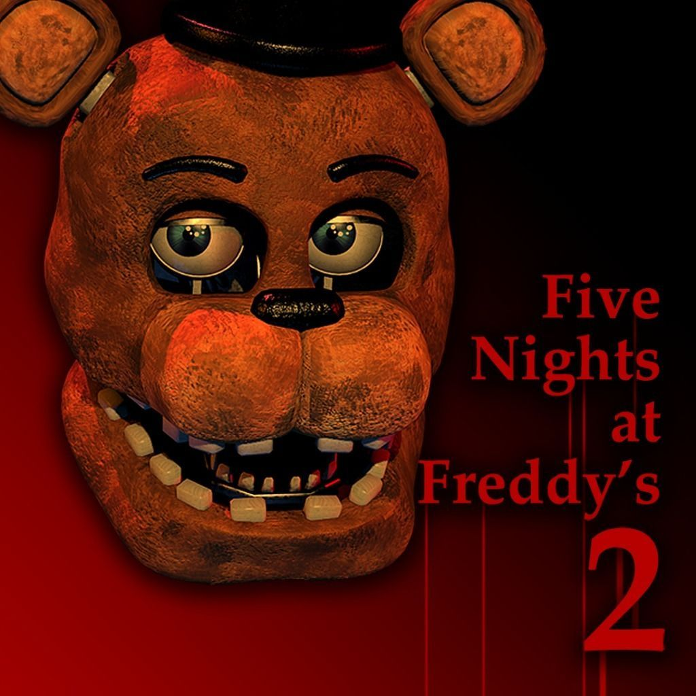
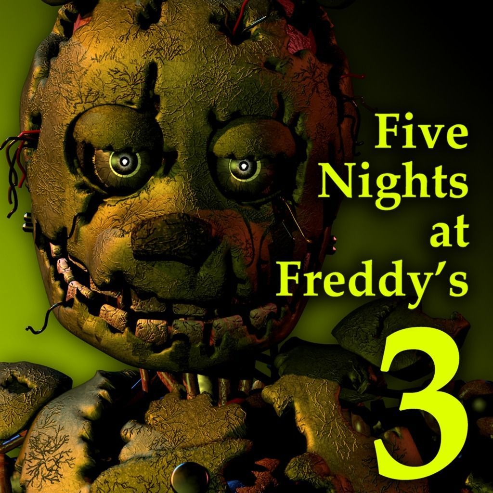
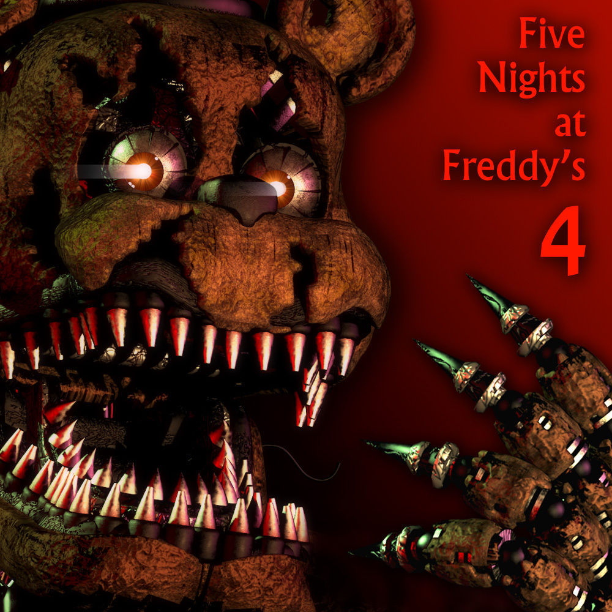
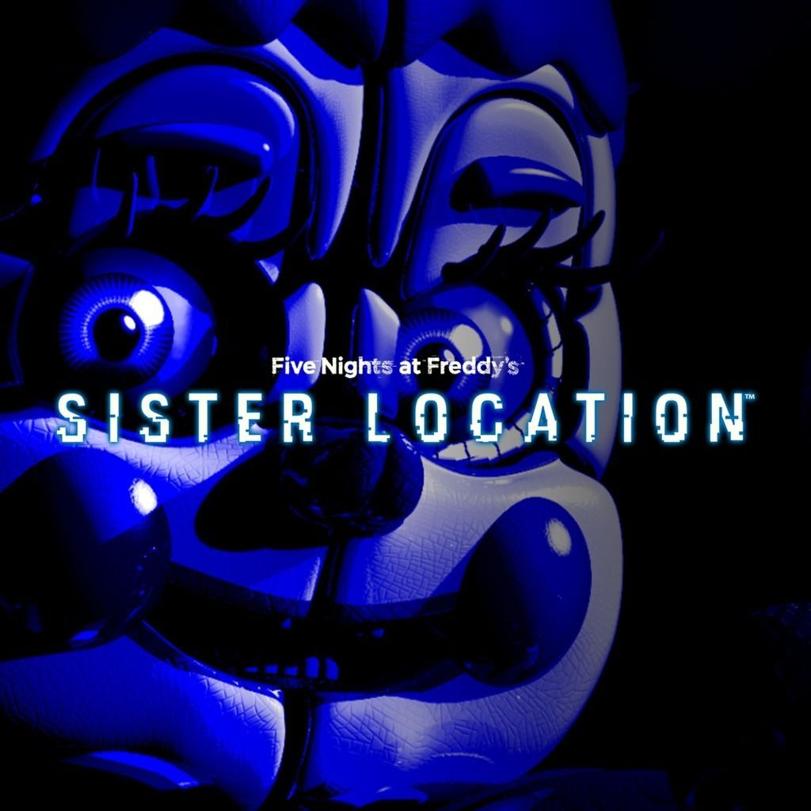
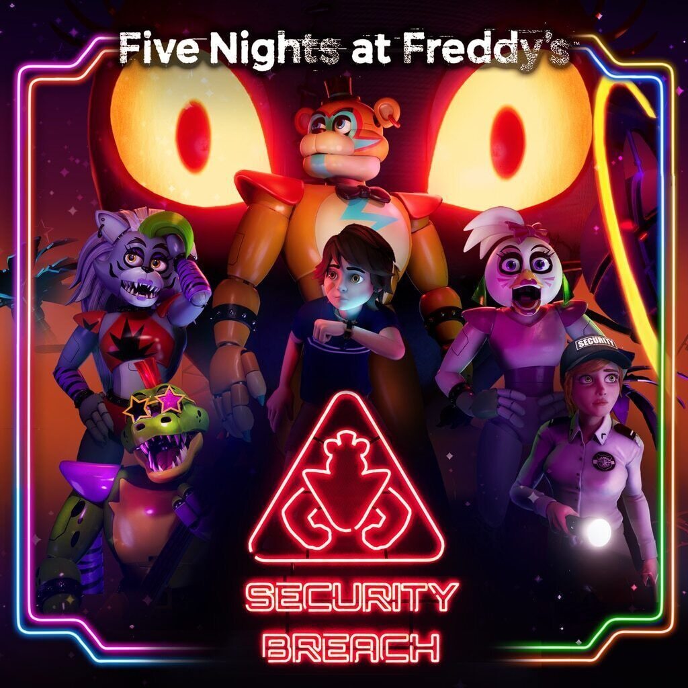

Lore y datos curiosos
Cada juego es una pieza del rompecabezas.
Linea de tiempo de lanzamientos

2014Five Nights at Freddy's

2014Five Nights at Freddy's 2

2015Five Nights at Freddy's 3

2015Five Nights at Freddy's 4

2016Sister Location

2021Security Breach
Informacion adicional
Es el Hombre Morado, responsable del Incidente de los Niños Desaparecidos. Murió dentro del traje de Spring Bonnie, que luego se conoció como Springtrap.
Es un animatrónico que vive en una caja de música. Según la historia, sería la primera víctima de Afton y quien dio vida a los animatrónicos con las almas de los niños.
Era una atracción de terror basada en la pizzería. Allí se encontró a Springtrap, y un incendio destruyó el lugar.
Circus Baby's Pizza World alquilaba animatrónicos para fiestas. Ennard, formado por varios endoesqueletos, escapa usando el cuerpo de un técnico.